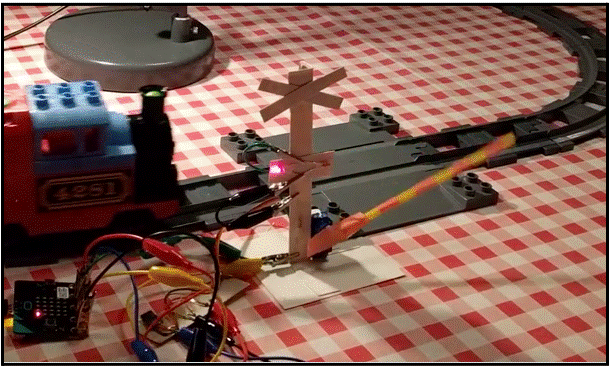
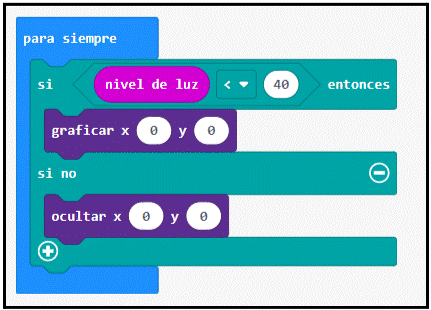

Detectar el tren

Vamos a encender el LED superior izquierdo de nuestro micro:bit cuando pase un tren. Para ello es necesario elegir un umbral. Este debería ser un número que se encuentre aproximadamente entre los dos números que anotaste en el paso 2. Por ejemplo, si el brillo en la sombra era 20 y en la luz era 60, debes usar 40 como umbral.
Agregue los siguientes bloques a su programa para que el LED superior izquierdo indique si se detecta un tren. Reemplace 40 con su umbral.

¡Ahora pruébalo! Si el led se enciende incluso cuando no pasa ningún tren, deberías intentar bajar el umbral. Si el led no se enciende cuando pasa un tren, deberías probar a aumentar el umbral.
NOTA: Si no logras que esto funcione de manera confiable, aún puedes continuar con el resto de los pasos y cerrar el cruce ferroviario usando un botón.